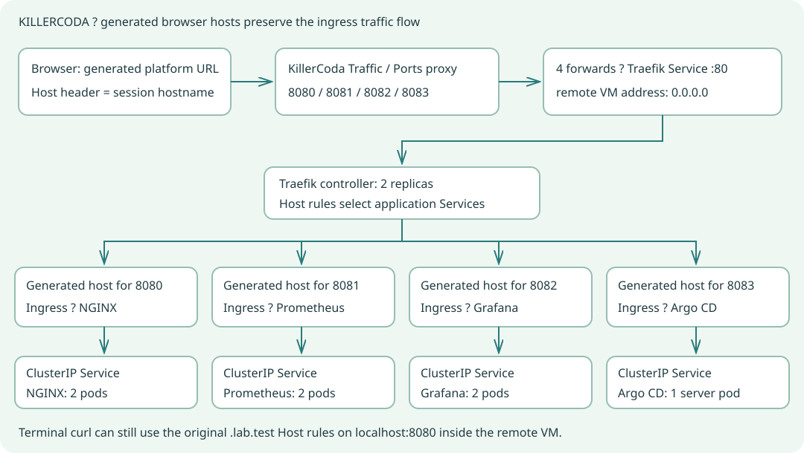

Choose the correct terminal
All primary command blocks in both lab guides use Bash. Invoke helpers with bash scripts/name.sh; no chmod or PowerShell is required. Git Bash is the terminal bundled with Git for Windows. KillerCoda provides Linux Bash in the browser. The older .ps1 helpers remain optional legacy files.
| Setting | Git Bash + Docker Desktop | KillerCoda Linux Bash |
|---|
| Cluster context | docker-desktop | Keep the supplied context |
| Local access | localhost:8080 + .lab.test Host header | Same curl tests inside the remote terminal |
| Browser access | Windows hosts entries + localhost forward | Generated per-port URLs + matching Ingress hosts |
| Ports | 127.0.0.1:8080 | 8080 NGINX, 8081 Prometheus, 8082 Grafana, 8083 Argo |
| GitOps source | Your public fork | Your public fork |
Git Bash on Windows
Install Git for Windows, kubectl and Helm; enable Kubernetes in Docker Desktop. Open Git Bash, not Windows PowerShell. Export MSYS_NO_PATHCONV=1 so Windows path conversion does not rewrite Kubernetes paths. This setting applies only to the current terminal, so use it in each new Git Bash terminal. Scripts also set it internally. Allow enough free cluster CPU/memory for six app pods plus the controller and Argo components. Inspect node capacity if scheduling is slow.
Clone and select Docker Desktop
git clone https://github.com/vrdipu/ingress-lab.git
cd ingress-lab
export MSYS_NO_PATHCONV=1
kubectl config use-context docker-desktop
kubectl get nodes
helm version --short
bash scripts/deploy.sh
Terminal A: keep local ingress access open
kubectl port-forward -n ingress-system svc/lab-ingress-traefik 8080:80 --address 127.0.0.1
Terminal B: test the ingress routes
export MSYS_NO_PATHCONV=1
bash scripts/validate.sh
bash scripts/smoke-test.sh
For desktop browser access: add to the Windows hosts file
127.0.0.1 nginx.lab.test prometheus.lab.test grafana.lab.test argocd.lab.test
Edit C:\Windows\System32\drivers\etc\hosts with an elevated text editor. Then use http://nginx.lab.test:8080, http://prometheus.lab.test:8080, http://grafana.lab.test:8080 and, after Argo setup, http://argocd.lab.test:8080. Hosts-file edits are unnecessary for curl tests.
KillerCoda: start a clean Kubernetes playground
Open the KillerCoda Kubernetes playground. Wait for its nodes to be Ready, then run these commands in the browser terminal. Do not select docker-desktop: that context belongs to your Windows machine. Start with a clean playground so other ingress controllers or exercises do not compete with this lab. If Helm is absent, the Linux helper installs a pinned binary in ~/.local/bin after checking its downloaded SHA-256 checksum. It does not require sudo.
Clone, check tools and install Section 1
git clone https://github.com/vrdipu/ingress-lab.git
cd ingress-lab
bash scripts/install-helm-linux.sh
export PATH="$HOME/.local/bin:$PATH"
kubectl config current-context
kubectl get nodes
bash scripts/deploy.sh
Browser access: keep this launcher running
bash scripts/killercoda-access.sh
The launcher reads /etc/killercoda/host and prints a generated URL for each installed app. It adds an Ingress with that actual browser hostname and forwards the corresponding port to the Traefik Service, not directly to the app. Use the printed URLs or the terminal menu’s Traffic / Ports entry. No hosts-file changes are needed. Port 8083 is skipped until Argo CD is installed.
KillerCoda access URLs can be reached by anyone who has the URL. Use only disposable lab credentials and no production secrets. The environment is ephemeral and has a session limit; if it expires, clone and deploy again. Commit your learning changes to your fork before the session ends.
Second KillerCoda terminal: test real ingress routing
cd ingress-lab
export PATH="$HOME/.local/bin:$PATH"
bash scripts/validate.sh
bash scripts/smoke-test.sh
curl -i -H "Host: nginx.lab.test" http://127.0.0.1:8080/
The curl command tests the original .lab.test rule; the browser uses an additional generated-host rule. Both go through Traefik → ClusterIP Service → ready app pod. Keep the launcher open while testing. Ctrl+C stops only its own port-forward processes. If a controller rollout ends a forward, rerun the launcher. Its logs are in ignored .lab-runtime/.
KillerCoda traffic flow

Prepare your own GitOps repository
Students need write access to the repository Argo watches. Fork vrdipu/ingress-lab in GitHub first. Clone your fork from the start, or change origin in an existing clone as below. Replace YOUR-USERNAME with your real username. Public forks require no Argo repository credential. A GitHub password/Google password is not a Git HTTPS push credential; use your normal Git credential manager or a narrowly scoped GitHub token at the interactive prompt. Do not put credentials in remote URLs or copied commands.
Point all desired-state sources to your fork
git remote set-url origin https://github.com/YOUR-USERNAME/ingress-lab.git
bash scripts/gitops-repository.sh https://github.com/YOUR-USERNAME/ingress-lab.git
git diff -- gitops/
git add gitops/demo/application.yaml gitops/bootstrap/project.yaml gitops/applications/
git commit -m "Point GitOps applications to my student fork"
git push -u origin main
If Git asks for author identity, set it for this clone
git config user.name "Your Name"
git config user.email "YOUR-GITHUB-EMAIL"
Commit and push these changes before running Argo setup. The script updates sourceRepos in the AppProject and repoURL in all three chart Applications plus the demo Application. Chart paths and destination stay unchanged. Application policy changes still need kubectl apply after a Git commit because there is no parent Application watching the Application manifests.
Section 2: start with Argo CD deployment
The beginner Argo CD demo is independent of Section 1. Install Argo first, open its URL, then create the demo manifests and Application. Do not use the older all-in-one argocd-setup.sh for this lesson: it also creates the optional Lab 1 chart Applications.
Install only Argo CD
bash scripts/argocd-install.sh
Terminal A: open the Argo UI on either platform
bash scripts/argocd-ui.sh
On Docker Desktop open http://localhost:8090. On KillerCoda use the generated URL printed by the helper, or Traffic / Ports 8090. Keep this terminal running. In terminal B follow the 8-step beginner Argo CD guide: read the password, save manifests in your fork, connect the repository, apply one Application with auto-sync, and demonstrate a Git change. No ingress controller is needed for this demo. The original three-chart handover is optional at the end.
Common Bash and playground problems
Use these checks before changing manifests.
kubectl rewrites a path on Windows
Export MSYS_NO_PATHCONV=1 in that Git Bash terminal. Use the documented Bash scripts, which export it internally.
Script reports unexpected carriage returns
Use a fresh Git clone. .gitattributes enforces LF for scripts. If you copied a script through another editor, save it with Unix LF endings.
Browser returns 404 on KillerCoda
A Host header must match an Ingress. Run killercoda-access.sh and use its generated URL, not a .lab.test URL or an old session URL. Inspect the generated Ingress hosts.
Connection refused / HTTP 000
Keep the access launcher or desktop forward running. After a Traefik rollout, restart it. Check .lab-runtime forward logs and port conflicts.
Pods stay Pending or ImagePullBackOff
Inspect kubectl describe pod and events. Ensure a clean playground has enough allocatable resources, registry access and time to pull images. Keep two replicas for the learning objective; do not silently reduce them.
Killercoda Git changes do not reconcile
Push to the same fork referenced by all three Applications and allowed by the project. Check targetRevision, resolved SHA, comparison errors and manual/auto-sync policy.
KillerCoda session has expired
The environment and local files are temporary. Start a fresh playground and repeat setup from your committed fork. Do not expect the previous Argo installation or generated URLs to persist.